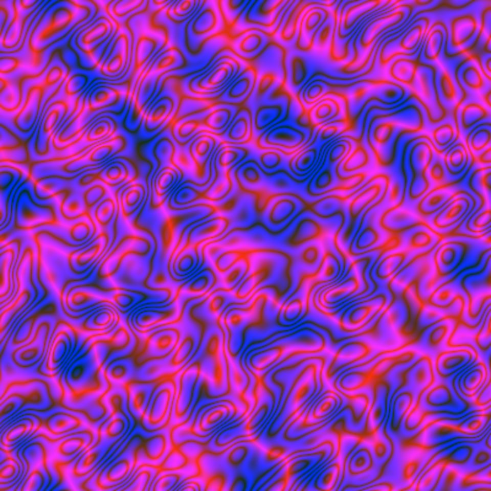

A (kind of) plasma effect in R
I found such an algorithm on Paul Bourke’s website:
take a random matrix \(M\) of size \(n \times n\) (we’ll take \(n=400\)), real or complex;
compute the discrete Fourier transform of \(M\), this gives a complex matrix \(FT\) of size \(n \times n\);
for each pair \((i,j)\) of indices, multiply the entry \(FT_{ij}\) of \(FT\) by
\[ \exp\Bigl(-\frac{{(i/n-0.5)}^2 + {(j/n-0.5)}^2}{0.025^2} \Bigr); \]finally, take the inverse discrete Fourier transform of the obtained matrix, and map the resulting matrix to an image by associating a color to each complex number.
Here is some code producing the above algorithm:
library(cooltools) # for the dft() function (discrete Fourier transform)
library(RcppColors) # for the colorMap1() function
fplasma1 <- function(n = 400L, gaussianMean = -50, gaussianSD = 5) {
M <- matrix(
rnorm(n*n, gaussianMean, gaussianSD),
nrow = n, ncol = n
)
FT <- dft(M)
for(i in seq(n)) {
for(j in seq(n)) {
FT[i, j] <- FT[i, j] *
exp(-((i/n - 0.5)^2 + (j/n - 0.5)^2) / 0.025^2)
}
}
IFT <- dft(FT, inverse = TRUE)
colorMap1(IFT, reverse = c(FALSE, FALSE, TRUE))
}Let’s see a first image:
img <- fplasma1()
opar <- par(mar = c(0, 0, 0, 0))
plot(
NULL, xlim = c(0, 1), ylim = c(0, 1), asp = 1,
xlab = NA, ylab = NA, axes = FALSE, xaxs = "i", yaxs = "i"
)
rasterImage(img, 0, 0, 1, 1)
par(opar)And more images:
You can play with the parameters to obtain something different.
Below I take the first image and I alter the colors by exchanging the green part with the blue part and then by darkening:
library(colorspace) # for the darken() function
alterColor <- function(col) {
RGB <- col2rgb(col)
darken(
rgb(RGB[1, ], RGB[3, ], RGB[2, ], maxColorValue = 255),
amount = 0.5
)
}
img <- alterColor(img)
dim(img) <- c(400L, 400L)Looks like a camouflage.
Note that the images are doubly periodic, so you can map them to a torus.
Now let’s do an animation. The fplasma2 function below does the same thing as fplasma1 after adding a number to the matrix \(M\), which will range from \(-1\) to \(1\).
fplasma2 <- function(M, t) {
M <- M + sinpi(t / 64) # t will run from 1 to 128
FT <- dft(M)
n <- nrow(M)
for(i in seq(n)) {
for(j in seq(n)) {
FT[i, j] <- FT[i, j] *
exp(-((i/n - 0.5)^2 + (j/n - 0.5)^2) / 0.025^2)
}
}
IFT <- dft(FT, inverse = TRUE)
colorMap1(IFT, reverse = c(FALSE, FALSE, TRUE))
}Here is how to use this function to make an animation:
n <- 400L
M <- matrix(rnorm(n*n, -50, 5), nrow = n, ncol = n)
for(t in 1:128) {
img <- fplasma2(M, t)
fl <- sprintf("img%03d.png", t)
png(file = fl, width = 400, height = 400)
par(mar = c(0, 0, 0, 0))
plot(
NULL, xlim = c(0, 1), ylim = c(0, 1), asp = 1,
xlab = NA, ylab = NA, axes = FALSE, xaxs = "i", yaxs = "i"
)
rasterImage(img, 0, 0, 1, 1)
dev.off()
}
library(gifski)
pngFiles <- Sys.glob("img*.png")
gifski(
png_files = pngFiles,
gif_file = "plasmaFourier_anim1.gif",
width = 400, height = 400,
delay = 1/10
)
file.remove(pngFiles)
Observe the black and blue background: it does not move. If instead of adding a number in the interval \([-1, 1]\), we add a number in the complex interval \([-i, i]\), then we observe the opposite behavior:
fplasma3 <- function(M, t) {
M <- M + 1i * sinpi(t / 64) # t will run from 1 to 128
FT <- dft(M)
n <- nrow(M)
for(i in seq(n)) {
for(j in seq(n)) {
FT[i, j] <- FT[i, j] *
exp(-((i/n - 0.5)^2 + (j/n - 0.5)^2) / 0.025^2)
}
}
IFT <- dft(FT, inverse = TRUE)
colorMap1(IFT, reverse = c(FALSE, FALSE, TRUE))
}